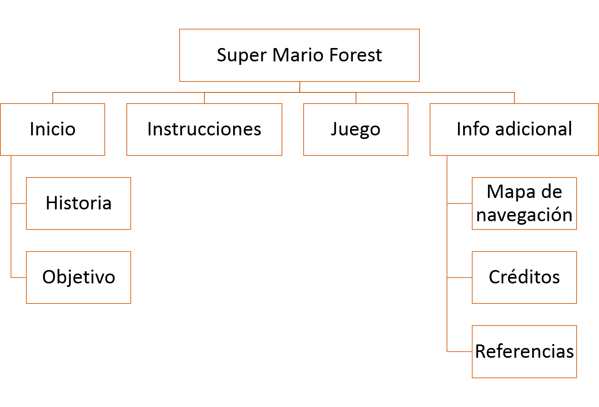

Super Mario Forest
inicio
Instrucciones
Juego
Info adicional
Mapa de navegacion

Creditos
Universidad Nacional de Colombia
Ingeniería de Sistemas y Computacion
Samuel Antonio Cabezas Tibaquicha
sacabezast@unal.edu.co
Referencias
https://www.khanacademy.org/computer-programming/8-bit-mario-goomba/2514687959
https://www.pinterest.com/pin/382806037048849524/
http://www.suggest-keywords.com/cnBnIGJhY2tncm91bmQ/
http://es.mario.wikia.com/wiki/Archivo:Champi%C3%B1on_super-2.PNG
http://icones.pro/es/hongo-retro-super-2-imagen-png.html
http://torkington.org/wordpress/?p=248